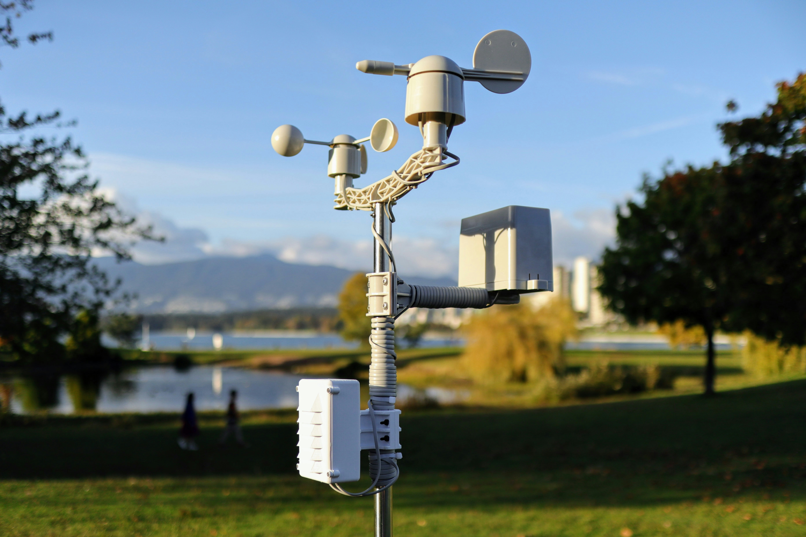

A Weather Monitoring Station is an advanced smart farming system that plays a vital role in improving sugarcane cultivation by continuously monitoring environmental conditions. It consists of various sensors that measure important weather parameters such as temperature, humidity, rainfall, wind speed, wind direction, atmospheric pressure, and solar radiation. The collected data is transmitted to farmers through a computer, mobile application, or cloud-based platform, enabling them to monitor weather conditions in real time.
This information helps farmers make informed decisions regarding irrigation scheduling, fertilizer application, pesticide spraying, and harvesting operations. Rainfall predictions prevent unnecessary irrigation, while temperature and humidity data help identify conditions favorable for pest and disease outbreaks.
When integrated with IoT technology and automated irrigation systems, the weather station can automatically control irrigation based on current weather conditions, reducing water wastage and improving resource efficiency. This promotes healthier sugarcane growth, improves crop quality, increases yield, and supports sustainable precision agriculture.